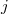
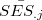
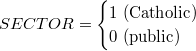
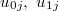

| 階層的線形モデルによるデータ分析の実際 — HLM6，SAS，Rを利用して — |
| 階層的線形モデルによるデータ分析の実際 — HLM6，SAS，Rを利用して — |
HLM6では，結果の出力にレベル1の（この場合は学校ごとの）切片や傾きの推定値は出力されない。 これらについては残差ファイルの中に格納されているため，必要であればこちらを確認する必要がある。 また，残差の確認はモデルの仮定が成り立っているかどうかをチェックするためにも有効である。
デフォルトでは，MDMファイルを格納したフォルダに残差ファイルが格納されているはずである。 1
"l1resid"とあるのが，レベル1の残差である。 "fitval"がモデル式によって予測された従属変数の値であり，これら2つの値を合計すると"mathach"と等しくなる。
レベル2の残差ファイルにはかなり多くの情報が格納されているので，重要と思われるものだけを以下にピックアップして説明した。
"ebintrcp"とあるのは， 2 レベル1の切片（）の推定に経験ベイズ（empirical Bayes）法を用いた際の残差（）である。 同様に"ebses"とあるのは，レベル1の傾き（）に経験ベイズ法を用いた際の残差（）である。
"olintrcp"，"olses"とあるのは，それぞれレベル1の切片（）および傾き（）を（学校ごとに）通常の最小2乗（ordinary least-squares）法で推定した際の残差（および）である。 3 この方法では経験ベイズ法の場合と異なりサンプル全体の情報を使っていないので，"eb・・・"で示した残差よりもこちらの方が残差（の絶対値）は大きくなっている。
それぞれレベル1の切片と傾きのレベル2モデルによる予測値である。
それぞれ 4 レベル1の切片と傾きの経験ベイズ推定値である。 これは，予測値("fv・・・")に残差の値("eb・・・")を足したものに等しい。
Footnotes
| 階層的線形モデルによるデータ分析の実際 — HLM6，SAS，Rを利用して — |